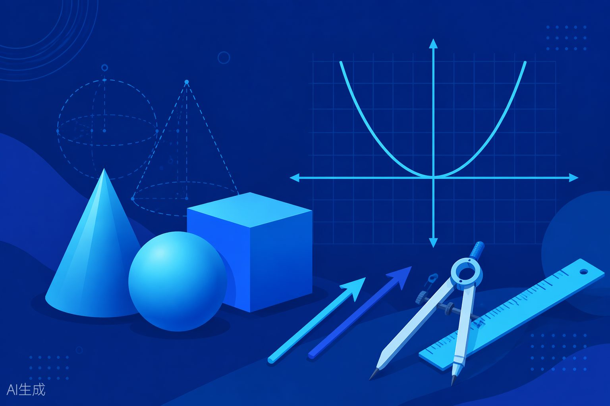

本专题将前面各专题中涉及的解题方法和套路进行系统梳理，形成"题型 + 方法"的对应关系。建议在复习完前面各专题后，用本专题进行查漏补缺和思维建模。
适用：二次函数 y = ax2+bx+c步骤：配方 → 确定顶点 → 结合区间示例：y = x2−4x+5 = (x−2)2+1 ≥ 1
适用：含根式、分式、复合函数步骤：设 t = g(x) → 求 t 范围 → 求 y = f(t) 值域示例：y = x+√(1−x)，令 t = √(1−x)
适用：y = (ax2+bx+c)/(dx2+ex+f)步骤：去分母 → 整理为关于 x 的二次方程 → Δ ≥ 0注意：检验分母不为零
适用：已知单调性的函数步骤：求定义域 → 判断单调性 → 代入端点示例：y = 1/x 在 [1,3] 上递减，值域 [1/3,1]
适用：可画出图像的函数步骤：画图 → 观察 y 的范围示例：y = |x−1|+|x−2| 的值域为 [1,+∞)
适用：和积型函数公式：a+b ≥ 2√(ab)（a,b>0）示例：y = x+1/x (x>0) 的值域 [2,+∞)
等差：Sn = n(a1+an)/2等比：Sn = a1(1−qn)/(1−q)平方和：Σk2 = n(n+1)(2n+1)/6
1/[n(n+1)] = 1/n − 1/(n+1)1/[n(n+k)] = (1/k)[1/n − 1/(n+k)]1/(√A+√B) = (√A−√B)/(A−B)
适用：等差 × 等比型步骤：写 Sn → 乘 q → 错位相减关键：中间部分构成等比数列
适用：可拆分为多个简单数列示例：an = n + 2nSn = Σn + Σ2n
适用：首尾配对和相等经典：等差数列求和推导步骤：Sn 正写 + Sn 倒写 → 相加
适用：正负交替的数列示例：1−2+3−4+...+(−1)n+1n策略：相邻两项合并
建系设坐标 → 用坐标运算数量积：x1x2+y1y2模长：√(x2+y2)最常用、最万能的方法
选不共线向量为基底将目标向量用基底表示利用基底的性质计算适用于几何图形中的向量问题
利用几何图形的性质中位线、相似、全等适用于有明显的几何结构
直观但需要较强的几何直觉
4a·b = |a+b|2 − |a−b|2将数量积转化为模长适用：已知"和"与"差"的模长技巧性强，需专门练习
方法：正弦定理先求第三角，再求其他边唯一解（AAS/ASA）
方法：余弦定理先求第三边，再求角唯一解（SAS）
方法：余弦定理用余弦定理求各角
最大角对应最大边
方法：正弦定理可能两解、一解或无解必须讨论！（SSA陷阱）
边的关系：a2+b2 vs c2角的关系：cosA 的正负常用正弦定理边角互化
S = ½ab·sinC海伦公式 S = √[p(p−a)(p−b)(p−c)]S = ½×底×高
| 问题类型 | 解题步骤 | 关键要点 |
|---|
| 求定义域 | 列出所有限制条件→解不等式组→取交集 | 分母≠0，根式≥0，真数>0，零次幂底≠0 |
|---|
确定定义域 → 选方法 → 计算 → 二次函数用配方法，分式用判别
写区间 式法
| 判断单调性 | 定义法（设x1<x2比大小）或导数法 | 增函数：x1<x2f(x1)<f(x2)⇒ |
|---|---|---|
| 判断奇偶性 | 检验定义域对称→计算f(−x)→比较 | 定义域不对称⇒非奇非偶 |
| 解指数方程 | 化为同底→比较指数→解方程 | af(x)ag(x)=⇒f(x)=g(x) |
|---|---|---|
| 解对数方程 | 化为同底→比较真数→检验真数>0 | logaf(x)=logag(x)⇒f(x)=g(x)>0 |
| 求零点 | 解或判断f(x)=0f(a)f(b)<0→二分法 | 零点存在定理需函数连续 |
|---|
至少做5道题，坚持21天形成习惯。
对答案 → 记录错题。
务必优先掌握。
奏。
回顾一次。
新高二数学暑假衔接讲练 — 高一升高二理科方向建议配合家教老师一对一辅导使用，每天2-3小时，持续6-8周完成